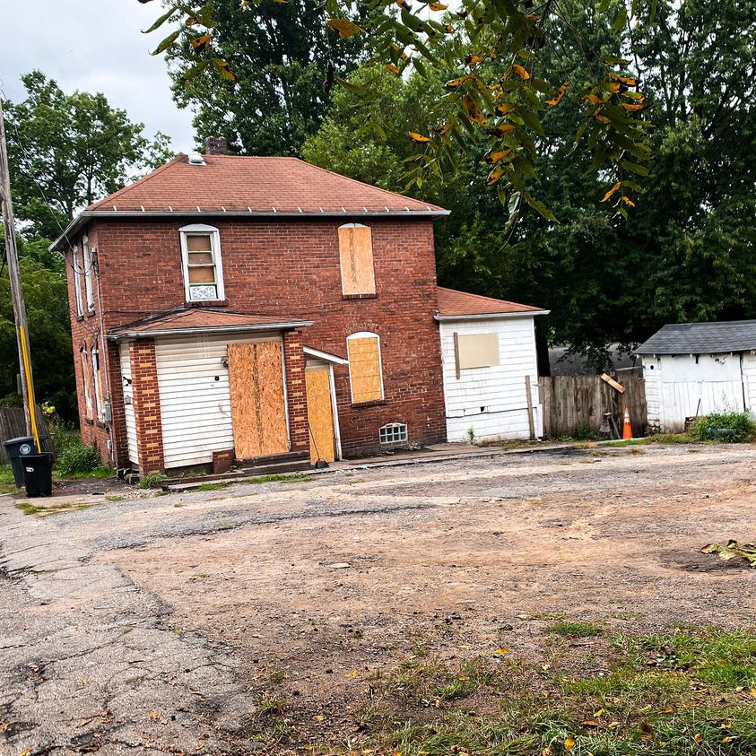

Timeline photos
I just finished my meeting with the head of housing inspections here in Akron, Duane Gregor.
I like Duane. He is respectful and professional. He follows the housing code to the T. I supposed that is his job. “Enforce the housing code.”
The housing code makes a lot of people homeless. But I also think the veneer of society is paper thin. This house of cards could come crashing down at any time. Maybe the housing code is critical to societal stability.
Duane told me a story about a moment he read about during the Sandy Hook nightmare. We had been discussing all the horrendous wrongs happening in America that don’t ever get fixed. School shootings. Homeless veterans. Failing schools. Opiate overdoses. Nothing is getting done about any of it.
But this Sandy Hook story he told me destroyed me. It was about the last few seconds of one of those 6 year olds. It nearly debilitated me to carry on cleaning up around the house here.
I truly truly believe everything happens for a reason. My heart needed broken deeply today. That story did it.
The way we treat each other in this country is horrendous. We all should beg God for forgiveness. Oh I forgot. You don’t believe in God anymore. I guess that gets you off the hook.
We are so selfish, so cruel, so basic.
We have so far to go. And we don’t seem to be making a single inch of progress in the area of compassion, empathy and understanding. What good is any of the rest of it if we can’t make any progress in our own humanity?